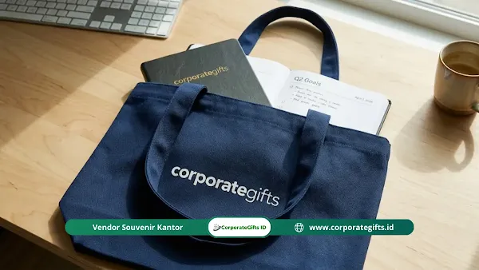

Corporate Gifts ID - Souvenir untuk kickoff meeting Q2 2026 adalah paket cinderamata fungsional dan merchandise branded yang disiapkan perusahaan bagi karyawan, pimpinan, maupun mitra untuk membakar motivasi kerja kuartal baru serta memperkuat brand identity korporasi. Pilihan cinderamata terpopuler mencakup tumbler stainless steel vacuum SUS304, notebook agenda kulit eksklusif, tote bag kanvas cordura, dan aksesoris teknologi fast charging. Corporate Gifts ID melayani pengadaan souvenir kantor dan merchandise korporat resmi untuk kebutuhan B2B di Surabaya, Jawa Timur, Jakarta, dan pengiriman ke seluruh Indonesia.
Poin Kunci Souvenir Kickoff Meeting Q2 2026:
- Fungsi Nyata & Relevan: Souvenir efektif harus berdaya guna harian di lingkungan kerja dan selaras dengan visi kuartal baru.
- Pilihan Populer: Tumbler stainless vacuum, notebook agenda kulit, tote bag kanvas cordura, dan gadget digital menjadi opsi terfavorit.
- Rentang Anggaran Fleksibel: Rata-rata biaya pengadaan korporat berkisar antara Rp25.000 hingga Rp200.000 per orang sesuai tingkatan acara.
- Waktu Pemesanan Ideal: Proses kurasi hingga produksi idealnya dimulai 3 hingga 6 minggu sebelum pelaksanaan rapat.
- Personalisasi Eksklusif: Grafir nama karyawan atau jabatan meningkatkan rasa memiliki (sense of belonging) secara signifikan.
Apa Itu Souvenir Kickoff Meeting dan Mengapa Penting?
Souvenir kickoff meeting adalah hadiah atau cinderamata terstruktur yang diserahkan perusahaan kepada jajaran pimpinan, karyawan, dan perwakilan mitra pada agenda rapat pembuka kuartal. Pada momentum kickoff meeting Q2 2026, yang umumnya diselenggarakan pada bulan April atau awal Mei 2026, agenda ini berfokus pada penetapan target baru, evaluasi kinerja Q1, serta perumusan strategi akselerasi bisnis.
Dalam konteks ini, souvenir kantor bukan sekadar pelengkap seremonial, melainkan bagian integral dari employee experience yang dirancang untuk mengobarkan antusiasme kerja. Mengutip studi dari Advertising Specialty Institute (ASI), lebih dari 85% penerima produk merchandise korporat mampu mengingat nama brand dan pesan institusi hingga lebih dari satu tahun pasca acara. Daya lekat ini membuktikan bahwa media fisik memiliki dampak emosional yang jauh lebih langgeng dibandingkan komunikasi digital konvensional.
Selain itu, riset Promotional Products Association International (PPAI) mengonfirmasi bahwa mayoritas karyawan merasa lebih diapresiasi dan memiliki loyalitas lebih tinggi ketika menerima merchandise kantor berkualitas. Pada rapat kickoff internal, cinderamata ini menjadi simbol komitmen kolektif dalam menuntaskan target kuartal kedua secara gemilang.
Pilihan Souvenir Terbaik untuk Kickoff Meeting Q2 2026
Kunci keberhasilan cinderamata korporat bertumpu pada fungsionalitas produk dalam rutinitas kerja harian. Berikut adalah kurasi kategori souvenir terbaik yang paling diminati perusahaan terkemuka:
1. Souvenir Fungsional untuk Aktivitas Kerja Harian
Kategori ini memiliki tingkat retensi tertinggi karena langsung mendukung produktivitas kerja peserta:
- Tumbler Stainless Steel SUS304 Vacuum: Menjaga suhu air panas dan dingin hingga 12 jam, awet bertahun-tahun, serta mendukung kampanye pengurangan sampah botol plastik sekali pakai.
- Notebook Agenda PU Leather Custom: Sangat relevan dengan esensi kickoff meeting yang sarat dengan perencanaan strategi, target KPI, dan pencatatan notula kerja.
- Tote Bag Kanvas atau Pouch Multifungsi: Tas jinjing berbahan kanvas tebal dengan sablon logo presisi, sangat diminati oleh karyawan milenial dan Gen Z.
- Desk Mat & Mouse Pad Ergonomis: Aksesori meja kerja yang mempercantik workstation kantor sekaligus memuat slogan semangat kerja Q2.
2. Souvenir Teknologi dan Digital
Sangat tepat bagi perusahaan teknologi, perbankan, start-up, atau instansi yang menerapkan sistem kerja hybrid:
- Power Bank Fast Charging PD Type-C: Solusi mobilitas tinggi bagi tenaga pemasaran dan eksekutif yang sering menghadiri pertemuan luar kantor.
- Multi-Port USB Hub & Kabel Data 3-in-1: Perlengkapan esensial meja kerja yang kompatibel dengan berbagai perangkat laptop modern.
- Kartu Nama Pintar Digital NFC: Terobosan modern ramah lingkungan yang memungkinkan pertukaran kontak bisnis hanya dengan satu sentuhan ke smartphone.
3. Souvenir Wellness dan Self-Care Karyawan
Tren corporate wellness kini kian diutamakan oleh manajemen SDM guna menjaga keseimbangan fisik dan mental tenaga kerja:
- Diffuser Mini & Essential Oil Set: Menciptakan atmosfer ruang kerja yang tenang dan menyegarkan fokus pikiran.
- Bantal Leher Travel Ergonomis: Menunjang kenyamanan tim operasional yang kerap melakukan perjalanan dinas antarkota.

Penyelarasan palet warna corporate gift dengan identitas visual perusahaan memberikan kesan profesional pada agenda kickoff meeting.
Cara Memilih Souvenir Kickoff Meeting yang Tepat
Agar pengadaan tidak salah sasaran, tim panitia dan divisi HRD dianjurkan menerapkan parameter seleksi terukur:
1. Kenali Profil dan Demografi Peserta
Identifikasi rentang usia, divisi kerja, dan rutinitas harian audiens. Souvenir untuk tim penjualan di lapangan tentu memiliki kebutuhan berbeda dengan staf administrasi operasional di meja kerja.
2. Selaraskan dengan Tema Kickoff Q2 2026
Kaitkan cinderamata dengan tema besar acara. Jika fokus Q2 bertajuk "Accelerate Growth & Sustainability", paket merchandise ramah lingkungan berbahan bambu atau wheat straw akan memperkuat narasi tersebut secara otentik.
3. Tetapkan Plafon Anggaran per Peserta
Kalkulasikan alokasi anggaran sejak dini:
- Tier Ekonomis (Rp25.000 - Rp75.000): Pouch kanvas, mug keramik, ballpoint metal grafir, atau notebook spiral.
- Tier Menengah (Rp75.000 - Rp150.000): Tumbler stainless SUS304, agenda hardcover kulit, atau tote bag laptop cordura.
- Tier VIP / Manajerial (Rp150.000 - Rp350.000+): Gift set kombinasi hard box magnetik berisi powerbank dan tumbler premium berukir nama.
4. Pilih Vendor Terpercaya dengan Legalitas B2B
Bermitra dengan vendor spesialis seperti Corporate Gifts ID menjamin ketersediaan sampel fisik pra-produksi (mockup), akurasi warna brand guide, serta kelengkapan administrasi Faktur Pajak PPN resmi.
Anggaran yang Wajar untuk Souvenir Kickoff Meeting
Besaran anggaran sangat dipengaruhi oleh jumlah peserta dan format kemasan yang dipilih (satuan atau paket gift box). Berikut estimasi kisaran anggaran berdasarkan skala event perusahaan di Indonesia:
| Skala Acara | Jumlah Peserta | Anggaran per Orang | Total Estimasi Anggaran |
|---|---|---|---|
| Rapat Divisi / Tim Kecil | 20 - 50 orang | Rp75.000 - Rp150.000 | Rp1.500.000 - Rp7.500.000 |
| Kickoff Regional / Menengah | 50 - 200 orang | Rp75.000 - Rp125.000 | Rp3.750.000 - Rp25.000.000 |
| All-Hands Korporat Besar | 200+ orang | Rp50.000 - Rp100.000 | Rp10.000.000 - Rp20.000.000+ |
Prinsip utama corporate gifting menegaskan bahwa memilih satu produk bermutu tinggi jauh lebih diapresiasi dibandingkan membagikan beberapa item murah yang mudah rusak. Kualitas material adalah cerminan langsung dari reputasi perusahaan.
Kapan Harus Memesan Souvenir Kickoff Meeting Q2 2026?
Untuk memastikan kelancaran logistik dan menghindari ongkos kirim ekspres mendadak, ikuti panduan lini masa pemesanan ideal berikut:
- 6 Minggu Sebelum Acara: Finalisasi tema acara, eksplorasi katalog produk, dan penentuan alokasi anggaran bersama manajemen.
- 4 - 5 Minggu Sebelum Acara: Penyerahan file vektor logo, approval digital mockup, dan konfirmasi jumlah order final.
- 2 - 3 Minggu Sebelum Acara: Proses produksi massal, quality control cetak logo, serta perakitan kemasan box.
- 1 Minggu Sebelum Acara: Pengiriman pesanan ke lokasi kantor dan pengecekan akhir oleh panitia internal.
Kesalahan Umum dalam Memilih Souvenir Kickoff Meeting
Hindari kekeliruan fatal yang kerap terjadi pada proses pengadaan cinderamata kantor:
- Merchandise Tanpa Personalisasi: Membagikan barang polos tanpa logo atau identitas acara membuat momentum kickoff terasa hambar.
- Kompromi Kualitas Demi Harga Murah: Produk yang cepat rusak seperti tumbler bocor atau pulpen macet justru merusak citra korporat.
- Pemesanan H-7 yang Tergesa-gesa: Membatasi pilihan produk pada stok sisa vendor dan memperbesar risiko cacat produksi.
- Mengabaikan Desain Kemasan: Padahal kotak kemasan atau packaging sleeve adalah titik kontak visual pertama saat bingkisan diserahkan.
Tips Sukses Pengadaan Souvenir Kickoff Meeting Q2 2026
- Prioritaskan Nilai Guna: Pastikan produk dapat dipakai berulang kali dalam aktivitas profesional maupun personal karyawan.
- Sisipkan Kartu Pesan Inspiratif: Selipkan kartu ucapan berisikan motivasi atau target kuartal dari dewan direksi di dalam kemasan.
- Manfaatkan Layanan Konsultasi Gratis: Diskusikan kebutuhan spesifik Anda dengan spesialis gifting untuk memperoleh paket paling efisien.
Kesimpulan: Perkuat Komitmen Kuartal Baru dengan Cinderamata Bermutu
Souvenir kickoff meeting Q2 2026 lebih dari sekadar tanda mata seremonial. Dipilih dengan cermat, cinderamata ini menjadi simbol komitmen bersama, pengingat fisik target perusahaan, dan pemicu semangat tim untuk mencapai prestasi terbaik di sepanjang kuartal kedua.
Dengan merencanakan pengadaan secara terstruktur, memprioritaskan mutu material, dan bermitra dengan vendor resmi yang berpengalaman, perhelatan kickoff meeting perusahaan Anda akan senantiasa berkesan mendalam bagi seluruh jajaran karyawan.